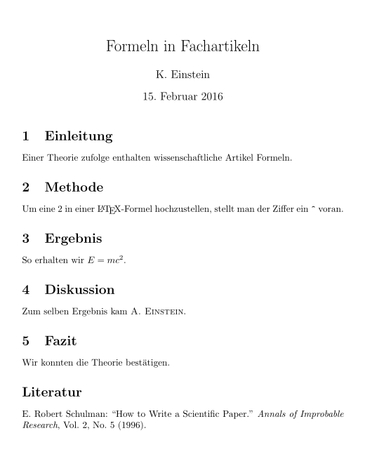

LaTeX
Zum Verständnis dieses Artikels sind folgende Seiten hilfreich:
TeX (Aussprache: [tɛχ], „tech“) ist ein Drucksatzsystem, mit dem sich Texte formatieren lassen. Dazu wird ein Text erstellt und die einzelnen Formatierungselemente – anders als in den gängigen Textverarbeitungsprogrammen üblich – direkt in den Quelltext geschrieben. TeX wandelt den Text dann in ein nach typographischen Regeln gestaltetes Dokument um. Erklärtes Ziel ist es, Dokumente, deren Quelltext in einfachen Textdateien vorliegt, über sehr lange Zeit unabhängig von Betriebssystemen, Dateiformaten oder kommender Computer-Technologie zu formatieren. Ein weiterer Schwerpunkt von TeX liegt auf der Möglichkeit, komplexe Strukturen wie mathematische Formeln, Grafiken und ähnliches in einer Qualität darzustellen, die derjenigen professioneller Setzer nicht nachsteht.
Auszeichnung¶
TeX - und noch mehr LaTeX - hat Gemeinsamkeiten mit der Hyper Text Markup Language („Hypertext-Auszeichnungssprache“, HTML), aber „mehr zu bieten.“ Anstelle der HTML-Tags werden Makros – „Befehle“ mit Parametern und bei LaTeX auch „Umgebungen“ – für die Auszeichnung (Formatierung/Gliederung) eingesetzt. Neben den bestehenden Befehlen können neue Befehle definiert und bestehende verändert werden. Dadurch ist es möglich, Formatierungen von Strukturelementen des Dokuments durchgehend einem anderen Design ohne Änderung des Quelltexts für den Inhalt anzupassen, ähnlich wie durch CSS im Falle von HTML.
Bei HTML muss die Beginnmarkierung eines Gliederungselements am Ende seines Inhaltcodes um einen Schrägstrich erweitert wiederholt werden:
1 | <em>betont</em> |
Bei TeX markiert stattdessen häufig ein Klammerpaar Anfang und Ende einer vom umgebenden Text abweichenden Formatierung – mit LaTeX:
1 | \emph{betont} |
Das hält den erforderlichen Quellcode knapp und lesbar. Erstreckt sich der Inhaltscode eines Elementtyps jedoch typischerweise über mehrere Codezeilen, so verwendet LateX „Umgebungen“, gekennzeichnet durch \begin und \end, die als Argumente Bezeichner des Elementtyps haben:
1 2 | \begin{quote}Edel sei der Mensch,\\ hilfreich und gut.\end{quote} |
Zum Vergleich mit HTML:
1 2 | <q>Edel sei der Mensch,<br /> hilfreich und gut.</q> |
LaTeX macht auf Fehler der Verschachtelung solcher Umgebungen in verständlicher Weise aufmerksam (in gewissem Gegensatz zu Klammerungsfehlern).
Aus- und Eingabe, Engines¶
Zur Darstellung des fertigen Dokuments wird anders als bei HTML kein Browser verwendet, sondern das TeX-Dokument durch einen Compiler (Übersetzungsprogramm) – in der Fachsprache eigentlich eine Engine – übersetzt (tatsächlich sagt man „es kompiliert“ u. ä), dessen/deren Ausgabeformat geräte- und betriebssystemunabhängig ist. Zeilen- und Seitenumbrüche werden festgelegt. Das traditionelle Ausgabeformat heißt DVI (Device independent file format, „eine Art Maschinensprache“ – a machine-like language). DVI-Dateien lassen sich – ggf. in PostScript oder heute mehr das PDF-Format umgewandelt – anzeigen, ausdrucken und im Netzwerk verteilen („Austauschformat“ – DVI-Dateien sind jedoch allenfalls unter TeX-Nutzern „austauschbar“). TeX als Satzsystem, wie es von dem amerikanischen Informatiker Donald Knuth ab 1977 entwickelt wurde, fußte auf der ebenfalls „TeX“ genannten Engine, die nur DVI erzeugt. Zur Erzeugung von PDF muss zusätzliche, externe Software verwendet werden („Druckertreiber“).
Ungefähr seit der Jahrtausendwende bedienen sich mehr und mehr TeX-Nutzer neuerer Engines, die PDF-Dateien ohne den Zwischenschritt DVI ausgeben. Die erste war pdfTeX.
TeX und pdfTeX sind bereits für andere europäische Sprachen als Englisch etwas kompliziert, die Sonderzeichen müssen durch spezielle „Befehle“ erzeugt werden. Linksläufiger Text erfordert mit TeX Makrokunststücke wie ArabTeX (in pdfTeX 1.40 wurde Wechseln der Schreibrichtung vereinfacht). TeX konnte anfangs auch nur Zeichensätze in einem speziell für dieses entwickelten Format verarbeiten, nicht Systemzeichensätze, wie man es von Bürosoftware her kennt.
Diesen Schwierigkeiten begegnen die neueren Engines XeTeX und LuaTeX. In ihrer Voreinstellung
In ihrer Voreinstellung
erzeugen sie ebenfalls PDF,
interpretieren sie Quellcodedateien als in UTF-8 (Unicode) kodiert – asiatische Schriftzeichen können also direkt eingegeben werden (und sie handhaben direkt 16-bit- statt 8-bit-Zeichensätze) und
sie verarbeiten OpenType-Zeichensätze (u. a.), also mit dem Betriebssystem installierte Zeichensätze (gegenüber pdfTeX verbessert, das bereits den Gebrauch von TrueType- und Type1-Schriftarten vereinfacht).
Die Entwicklung von pdfTeX ist bis auf Fehlerbehebungen abgeschlossen, LuaTeX wird als dessen Erweiterung entwickelt (stabile Version 0.80 Oktober 2015 – Knuth nimmt an seiner Engine seit 1990 nur noch Fehlerbehebungen vor). XeTeX wird unabhängig davon entwickelt und trug im September 2013 die Versionsnummer 0.9999.3. Der Name drückt die Möglichkeit aus, die Schreibrichtung im Dokument zu wechseln.
LaTeX¶
Neben der Engine spielen die so genannten Makros eine herausragende Rolle bei der Formatierung mit TeX. Aus ihnen wurden die „Anwenderbefehle“ konstruiert, die vom Autor zur Formatierung verwendet werden.
LaTeX (Aussprache: [ˈlaːtɛχ], „latech“) ist eine ursprünglich von dem Informatiker Leslie Lamport Anfang der achtziger Jahre entwickelte Sammlung solcher Makros, die in besonderem Maße die Nutzung von TeX (fast) ohne Programmier- und Typografiekenntnisse ermöglicht. Neben der reinen Formatierung wird auch die logische Struktur von Texten berücksichtigt. Dies ist der Grund, warum heute Aufsätze, Briefe, Diplomarbeiten, Memos usw. bis hin zu Büchern und Sammelbänden (mehrerer Autoren) mit LaTeX aufgesetzt werden; für diese Dokumente erforderliche Befehle existieren bereits oder lassen sich leicht aus den vorhandenen ableiten. Außerdem vereinfacht LaTeX Formatierungen durch „Umgebungen“, innerhalb derer andere Parameter zur Gestaltung von Absätzen als im Fließtext gelten, um beispielsweise automatisch nummerierte Listen zu erzeugen. Das grundlegende Layout eines Dokumentes (Dateiendung: .tex) wird bei LaTeX durch die „Dokumentenklasse“ festgelegt, mit zusätzlichen Makropaketen können noch nicht verfügbare Befehle hinzugeladen werden. Die wesentliche Aufgabe eines Autors beschränkt sich dann darauf, den Text zu erstellen. Hinsichtlich der Eingabekodierung stellt LaTeX außerdem einen Mechanismus zur Verfügung, der die Nutzung von TeX und pdfTeX für nicht-englische Schriftstücke wesentlich vereinfachte (inputenc ).

Der folgende Scherzartikel soll eine Ahnung davon vermitteln, wie LaTeX-Quelldokumente in der Praxis aussehen, rechts das Ergebnis. Die Dokumentenklasse (\documentclass) heißt hier article, ansonsten sollte der Code für sich selbst sprechen (Literatur aus Wikipedia).
1 2 3 4 5 6 7 8 9 10 11 12 13 14 15 16 17 18 19 20 21 22 23 24 25 26 | \documentclass[a4paper]{article} \usepackage{ngerman} \begin{document} \author{K. Einstein} \title{Formeln in Fachartikeln} \maketitle \section{Einleitung} Einer Theorie zufolge enthalten wissenschaftliche Artikel Formeln. \section{Methode} Um eine 2 in einer \LaTeX-Formel hochzustellen, stellt man der Ziffer ein \verb+^+ voran. \section{Ergebnis} So erhalten wir \(E=mc^2\). \section{Diskussion} Zum selben Ergebnis kam \textsc{A. Einstein}. \section{Fazit} Wir konnten die Theorie best"atigen. \section*{Literatur} E. Robert Schulman: ``How to Write a Scientific Paper.'' \textit{Annals of Improbable Research}, Vol.~2, No.~5 (1996). \end{document} |
Weitere Einzelheiten über LaTeX-Code finden sich im Artikel LaTeX Einführung.
Distributionen¶
LaTeX setzt eine TeX-Installation (auch TeX-System genannt) und einen Editor voraus. Außer der Engine und den zentralen LaTeX-Makros in latex.ltx sind im Allgemeinen weitere Zusatzprogramme, Makropakete, Daten über Zeichensätze, Dokumentationsdateien usw. erforderlich. Moderne TeX-Distributionen bemühen sich, Anwendern die Kenntnis und Wahrnehmung der Komplexität dieser Voraussetzungen zu ersparen. Ein unscheinbares Beispiel: Die von TeX Live verwendete Programmbibliothek kpathsea ermöglicht es der TeX-Engine, in einem TeX-Lauf benötigte Paketdateien aus hunderten/tausenden von Verzeichnissen zusammenzusuchen, und zwar wesentlich schneller, als dies mit einer einfachen Dateisuche wie etwa mit find möglich wäre.)
In diesem Zusammenhang wichtig: CTAN  steht für „Comprehensive TeX Archive Network“ und stellt – vergleichbar mit den Paketquellen von Ubuntu – eine äußerst umfangreiche Quelle für TeX-Pakete zur Verfügung.
steht für „Comprehensive TeX Archive Network“ und stellt – vergleichbar mit den Paketquellen von Ubuntu – eine äußerst umfangreiche Quelle für TeX-Pakete zur Verfügung.
Eine Seite von Dante e.V. zählt „historische“ TeX-Distributionen auf und nennt als „aktuell“ nur noch folgende:
MaCTeX für OS X – hier wohl irrelevant.
MiKTeX
für Microsoft Windows könnte unter Linux mit dem (Nicht-)Emulator Wine betrieben werden, wenn das für Zusammenarbeit mit anderen MiKTeX-Anwendern hilfreich ist oder wenn man bestimmte Features sehr schätzt.TeX Live ist für die gängigsten Plattformen geeignet, insbesondere Ubuntu.
Einige Besonderheiten:
MiKTeX installiert in einem TeX-Lauf erstmals benötigte Pakete aus dem Internet (falls angeschlossen – „on the fly“). (Eventuell stürzt der Lauf ab, aber zum nächsten Lauf ist das Paket installiert.) – Für TeX Live ist dieses Feature durch das Paket texliveonfly
nachgebildet worden.MiKTeX bietet ein Programm texify
(nicht zu verwechseln mit texify ) an, das mehrere TeX- und Hilfsprogrammläufe (für Index, Bibliografie, …) so lange ausführt, bis alle Verweise stimmen. Eine Vielzahl von Skripten, die auf einer CTAN-Übersichtsseite / aufgezählt sind, bietet solche Funktionalität auch ohne MiKTeX.MiKTeX wie TeX Live
bieten „portable“ TeX-Installationen für USB-Sticks oder DVD an, die man an einen Computer anschließt, wenn man an ihm mit TeX arbeiten möchte.Freie Software: TeX Live beschränkt sich auf TeX-Pakete, die frei im Sinne der Free Software Foundation und der Debian Free Software Guidelines sind. Es „distribuiert“ daher keineswegs alle im CTAN gesammelten TeX-Pakete. Manche CTAN-Pakete müssen ausgelassen werden, weil keine Nutzungsbedingungen angegeben sind und der Autor für eine Aktualisierung einschließlich expliziter Lizenz nicht erreichbar ist. – Glücklicherweise sind die für LaTeX erforderlichen TeX-Pakete größtenteils frei: pdfTeX und LuaTeX stehen unter der GNU General Public License (GPL), XeTeX steht unter der MIT-License. LaTeX selbst steht unter der eigens dafür geschaffenen LaTeX Project Public License (LPPL), die erst nach einigem Kampf als „frei“ akzeptiert wurde. Sie leitete sich von Knuths (sehr) eigener Lizenz für TeX ab, deren besonderes Kennzeichen es war, das Programm zwar abgeändet verteilen zu dürfen, ihm dann aber einen neuen Namen zu geben müssen (vgl. texify und texify). Ein Großteil von LaTeX-Zusatzpaketen verwendet die LPPL, die GPL kommt auch ab und zu vor.
Dokumentation: Sowohl unter TeX Live als auch unter MiKTeX wird ein Zusatzprogramm texdoc angeboten, das in der Kommandozeile mit
texdoc [OPTIONEN] PAKETNAME
aufgerufen wird. Dies bewirkt, dass die zum (installierten) TeX-Paket PAKETNAME vorhandene Dokumentation angezeigt wird. Meistens ist eine Datei PAKETNAME.pdf vorhanden, die mit dem Standard-PDF-Betrachter der Desktopumgebung geöffnet wird.
Installation¶
Da TeX Live die wichtigste Distribution darstellt und Bestandteil der offiziellen Paketquellen ist, ist sie der bevorzugte Kandidat zur Installation. Allerdings enthalten die Paketquellen nicht immer die aktuellen Versionen von TeX-Paketen (und kürzlich neu erschienene gar nicht) und können den im CTAN vorhandenen Versionen um Jahre hinterherhinken. Dem gegenüber werden viele TeX-Pakete aktiv entwickelt und jährlich mehrfach, teils mehrmals im Monat aktualisiert. Daneben kann man mit Ubuntu/Debian kaum eine minimale TeX-Installation führen, die sich auf die persönlich benötigten TeX-Pakete beschränkt; während CTAN mehr als 5000 TeX-Pakete bietet, gibt es knapp 100 Debian-TeX-Live-Pakete (Februar 2016); statt etwa der bevorzugten Implementation von Altgriechisch erhält man alles, was mit Griechisch zu tun hat. Daher kann je nach Ubuntu-Version auch ein „Personal Package Archiv“ (PPA) oder eine manuelle Installation sinnvoll sein.
Die konkrete Installation wird in zwei Unterartikeln beschrieben:
Editoren und Bedienung¶
Beispiel: minimalistische Bedienung¶
Eine simple Art, LaTeX-Dokumente zu verfassen oder zu bearbeiten, beginnt damit, das .tex-Dokument – etwa die Steuerdatei beispiel.tex mit einem Inhalt wie oben in irgendeinem Texteditor[2] zu öffnen (und zu bearbeiten), in einem Terminal[1] in das Verzeichnis von beispiel.tex zu wechseln und darin
pdflatex beispiel
einzugeben. Das Terminal zeigt nun pdfTeXs Meldungen an, dazu können Warnungen und Fehlermeldungen wegen falscher Syntax gehören. Ist der Lauf beendet, so gibt man etwa
xpdf beispiel.pdf &
ein, um das Ergebnis mit dem PDF-Betrachter Xpdf anzusehen (falls dieser installiert ist). Durch das schließende & bleibt der Betrachter bei weiteren Terminaleingaben geöffnet. Im Editor korrigiert man nun etwas oder setzt die Arbeit fort und betätigt anschließend die Aufwärtstaste
↑ , bis die pdflatex-Zeile wieder erscheint, dann die Eingabetaste
⏎ . Xpdf zeigt die überarbeitete Version nun erst, wenn man die Taste
R bedient. Usw.
Diese minimalistische Art, mit LaTeX zu arbeiten, ist etwa für leistungsschwach Hardware geeignet. Didaktischer Zweck des Beispiels ist außerdem, als wesentliche Bedienungs- oder Kontrollwerkzeuge neben dem Kompilationssystem noch folgende hervorzuheben, die weiter unten durchdekliniert werden:
den Editor (der den Quellcode nicht nur ändert, sondern auch laufend anzeigt),
die Terminalausgabe (oder „Konsolenausgabe“) und
den Betrachter (zur Druckvorschau, auch zum Ausdrucken selbst)
Sie werden (im Beispiel) in verschiedenen Fenstern (oder Tabs, oder auch virtuelle Konsole) dargestellt.
Andere Dokumentenbetrachter¶
Außer unter KDE trifft man eher den universellen Betrachter („Viewer“) Evince vorinstalliert an, den man im Terminal[1] durch
evince beispiel.pdf > /dev/null 2>&1 &
aufruft. Der Zusatz „> /dev/null 2>&1“ dient dazu, die gewöhnlich irrelevanten Warnungen seines Fensters auszublenden. (Praktisch tippt man das nicht jeden Morgen ein, sondern ruft ein Shellskript, etwa viewbsp.sh, dieses Inhalts auf.) Alternativ klickt man im Arbeitsverzeichnis auf beispiel.pdf. (Das Arbeitsverzeichnis enthält allerlei Hilfsdateien, die es sehr unübersichtlich machen. Die relevanten Dateien sind meist die zuletzt erzeugten, so dass oft die Sortierung nach Erzeugungszeit hilfreich ist.) Eine weitere Möglichkeit, das Ergebnis mit Evince zu betrachten, besteht darin, ihn aus dem Startmenü heraus zu öffnen und die gewünschte Datei über sein Menü und den Dateibrowser zu öffnen.
Evince aktualisiert die Dokumentenansicht automatisch sofort nach beendetem TeX-Lauf. Er kann auch mit latex erzeugte DVI-Dateien darstellen (teils fehlerhaft). Unter KDE betrachtet man PDF und DVI mit Okular. Weitere PDF-Betrachter werden im Artikel PDF beschrieben.
Ein älterer, noch mit TeX Live ausgelieferter DVI-Betrachter ist xdvi. Unter MiKTeX (mit Wine) ist YAP („Yet Another Previewer“) ein moderner DVI-Betrachter mit guter PostScript-Unterstützung.
(Andere) Kompilierungsbefehle¶
Die folgende Tabelle gibt links den Befehl BEFEHL an, den man in
BEFEHL beispiel
wie im Beispiel oben einsetzen müsste, um das in der übrigen Halbzeile angegebene Ergebnis zu erzielen:
| Aufruf von LaTeX mit einer Engine | ||||||
| Befehl | nutzt Engine | Ausgabedatei | Befehl | nutzt Engine | Ausgabedatei | |
latex | pdfTeX (DVI-Modus) | beispiel.dvi | xelatex | XeTeX | beispiel.pdf | |
pdflatex | pdfTeX (PDF-Modus) | beispiel.pdf | lualatex | LuaTeX (PDF-Modus) | beispiel.pdf | |
Außer diesen Befehlszeilen müssen ggf. gelegentlich welche eingegeben werden, die das Register oder die Literaturangaben aktualisieren.
Editoren¶
Universelle Editoren¶
Zum Erstellen der Quelldateien genügt im Prinzip ein normaler Editor, wie ihn alle Ubuntu-Versionen und Derivate an Bord haben.
Für längere Texte bieten bereits die Standard-Editoren anderer Desktopumgebungen zusätzliche LaTeX-spezifische Unterstützung durch Syntaxhervorhebung. Diese erleichtert die Arbeit, indem sie schon erkennen lässt, welcher Text in der Ausgabe erscheint oder bei welchem Code es sich stattdessen um Auszeichnung bzw. „Befehle“ oder bloße Kommentare handelt. Dieses Feature lässt auch (wenn man aufmerksam ist) erkennen, ob Code-Klammern (geschweifte, eckige) korrekt paarweise auftreten. Darauf zu achten ist wichtig, denn die Fehlermeldungen von TeX und LaTeX, die auf falscher Klammerung beruhen, sind recht kryptisch.
Derartige Funktionalität weisen auch plattformübergreifende Editoren wie VIM und Emacs auf, die von Programmierern verwendet werden. Solche Editoren sind mit LaTeX hilfreich, ohne speziell für LaTeX entwickelt worden zu sein. Sie sind eine gute Wahl, wenn man außer in LaTeX noch in anderen Auszeichnungs- und Programmiersprachen schreibt, welche sie alle gleichermaßen unterstützen.
Weitere besonders für LaTeX nützliche Features, die auch viele derartige Editoren vorweisen, sind
Code-Faltung sowie
konfigurierbare automatische Code-Erzeugung (für häufige Befehle und Code-Strukturen wie die „Umgebungen“) durch Tastenkombinationen, Funktionstasten, oder Mausaktionen (was Makrorecorder einschließt).
LaTeX-Editoren¶
In Verbindung etwa mit einer fertigen Tastenbelegung zur Erzeugung von LaTeX-Befehlen oder -Umgebungen ist ein universeller Editor bereits ein LaTeX-Editor im Sinne der Wiki-Liste, allgemeiner mit einem „LaTeX-Plugin“. Dort finden sich darüber hinaus integrierte Software-Entwicklungsumgebungen mit LaTeX-Plugins (eine gute Wahl für Programmierer).
Während ein Texteditor eigentlich nur dazu dient, Textdateien zu bearbeiten und anzuzeigen, vereinfacht eine Entwicklungsumgebung auch das Kompilieren (und mehr) von Programmen oder hier Dokumentdateien durch Schaltflächen (und Tastenkombinationen). Die Bezeichnung „LaTeX-Editor“ oder allgemeiner „TeX-Editor“ hat auch auf Entwicklungsumgebungen übergegriffen. Dazu zählen sogar Entwicklungsumgebungen, die ausschließlich dem Erstellen von TeX-Dokumenten dienen. Ein sehr umfangreicher LaTeX-Editor dieser Art ist beispielsweise Kile für die Desktopumgebung KDE. Die Terminalausgabe ist in einem eigenen (kleinen) Teilfenster des gesamten „Editor“-Fensters zu sehen, teils durch eigene Zusammenfassungen überarbeitet. Auch der Betrachter wird über eine Schaltfläche aufgerufen, erscheint aber meist in einem eigenen Fenster und kann in der Konfiguration ausgewählt werden. Menüs sowie Werkzeug-/Symbolleisten geben ähnlich wie bei Textverarbeitungen eine Übersicht über die wesentlichen Möglichkeiten von LaTeX und helfen bei der Gestaltung von Formeln.
TeXworks (vom Mac-Editor TeXShop inspiriert) und Gummi hingegen bringen einen eigenen PDF-Betrachter mit. Dies erleichtert die Implementation von Quelltext-Betrachter-Synchronisation, so dass man per Rechtsklick sowohl von einer Code-Stelle zur entsprechenden Stelle im PDF als auch umgekehrt springen kann (was grundsätzlich auch mit anderen Betrachtern möglich ist; vgl. Beschreibung dieser Funktionalität im Artikel Kile). Gummi führt die TeX-Läufe sogar automatisch bei Änderungen des Codes aus und aktualisiert die Ergebnisansicht.
LyX ist ein Programm, das eine grafische Benutzeroberfläche ähnlich einer Textverarbeitung für LaTeX bereitstellt. Den LaTeX-Code muss der Anwender nicht sehen, er wird aus den Eingaben automatisch erzeugt. Was stattdessen im Bearbeitungsfenster erscheint, ist nicht eine Druckvorschau, sondern soll die Struktur des Dokuments darstellen (vgl. „strukturelle Auszeichnung“ u. ä. wie aktuell auch mit HTML). (Zu automatisch erzeugtem LaTeX-Code vgl. auch die internen Links. LaTeX-Code kann auch manuell eingefügt werden, so dass volle LaTeX-Funktionalität möglich ist.)
Experten-Info:
Das „Filtern“ der Terminalausgabe in LaTeX-Entwicklungsumgebungen und die voreingestellte Höhe des dafür vorgesehenen Fensters sind problematisch. Warnungen und Fehlermeldungen sind für LaTeX und teils auch für die Engine als „unübersehbar“ konzipiert worden und werden so von Makropaket-Autoren eingesetzt. Durch das „Filtern“ kann es geschehen, dass – vom Bearbeiter unbemerkt – völlig unsinnige Symbole erscheinen, Seiten fehlen oder überhaupt keine neue Ausgabedatei erzeugt wird. Falls der Bearbeiter dies im Betrachter oder anhand des Ausdrucks bemerkt, ist es ihm völlig rätselhaft – obwohl in der Terminalausgabe unübersehbar darauf hingewiesen wird und ihr manchmal auch eine Problemlösung zu entnehmen ist. – Für eine Steuerdatei beispiel.tex hinterlässt ein TeX-Lauf eine Datei beispiel.log, die noch ausführlicher als die Terminalausgabe ist. Es ist aber sinnlos, diese nach jedem Lauf durchzusehen. Sie ist eher dafür gedacht, von Experten zu Rate gezogen zu werden, wenn bereits etwas zu klären ist. – Daneben ist es aber ratsam, diese Datei durchzusehen, bevor man „kamerafertige Seiten“ eines Buches an den Verlag schickt.
Ergänzende Programme und Pakete¶
Präsentationen¶
LaTeX Beamer ist eine Dokumentenklasse zur Erstellung von Präsentationen. Das zugehörige Paket heißt:
latex-beamer (universe)
 mit apturl
mit apturl
Paketliste zum Kopieren:
sudo apt-get install latex-beamer
sudo aptitude install latex-beamer
Weitere Informationen und Anleitungen findet man unter den folgenden Links:
LaTeX Beamer Überblick
- auf Deutsch
Grafiken¶
LaTeXs picture-Umgebung erlaubt die Erzeugung einfacher Diagramme direkt mit TeX, einige Makropakete gehen für speziellere Aufgabenstellungen ähnliche Wege. Häufig werden Grafiken erst durch externe Programme („Treiber“) dargestellt, besonders gängig ist die Verwendung von eingebettetem PostScript. Dies funktioniert gut für die DVI-Ausgabe und wird unterschiedlichem Maße auch schon durch DVI-Betrachter unterstützt. Für die direkte Erzeugung von PDF funktioniert dies nicht.
Eine neuere Entwicklung sind (in Kombination) die Makropakete PGF und TikZ. Damit geschriebener Quellcode wird bei der Erzeugung von DVI als PostScript umgesetzt, bei direkter Erzeugung von PDF durch PDF selbst. Verschiedene Diagrammzeichnungs- und Grafikprogramme können in die dadurch definierte Makrosprache exportieren und so für Grafiken in LaTeX-Dokumenten eingesetzt werden. Ein hier im Wiki beschriebenes Beispiel ist Dia.
LaTeXDraw stellt eine Umgebung mit verschiedensten Formen bereit, um Grafiken für LaTeX einfach und ohne großes Vorwissen zu erstellen. Es verwendet allerdings das Makropaket PSTricks und damit das heute problematische PostScript, ohne dessen Möglichkeiten voll auszuschöpfen.
pdfTeX (pdflatex) kann JPG- (also Fotos) und PNG-Dateien über das Makropaket graphics bzw. graphicx einbinden.
Symbole einfügen¶
Mit TeX und LaTeX standen bereits in den 80er Jahren Symbole für mathematische Texte zur Verfügung, die noch lange nicht von Normenausschüssen wie ANSI oder ISO kodiert werden konnten (innerhalb von 7 oder 8 Bit, Platz für allenfalls 200). Der hier im Wiki beschriebene LaTeX Symbols Selector ist ein (zuletzt 2008 aktualisiertes) Hilfsprogramm zur Auswahl unter mit LaTeX zur Verfügung stehender „Sonderzeichen“. Allerdings können damit nur wenig mehr als 400 der unter LaTeX zur Verfügung stehenden Zeichen „ausgewählt“ werden, bei denen es sich im November 2015 tatsächlich bereits um mehr als 14000 handelte – siehe CTAN-Info-Paket comprehensive . Auch manche LaTeX-Editoren bieten Symbolleisten mit ähnlicher Funktionalität.
Problembehebung¶
gnome-open wird nicht gefunden¶
Bei der Verwendung von TeX Live 2009 kann bei Eingabe des Befehls texdoc ab Ubuntu 11.10 der folgende Fehler auftreten:
"sh: gnome-open: not found"
Das Problem kann behoben werden, indem man die Konfiguration von texdoc anpasst, sodass xdg-open statt gnome-open verwendet wird.
Hinweis:
Der folgend genannte Ordner ~/texmf/texdoc muss angepasst werden, wenn bei der Installation von TeX Live ein anderer Ordner für benutzerdefinierte Komponenten angegeben wurde.
Hierzu erstellt oder editiert man mit einem Texteditor [2] die Datei texdoc.cnf im Ordner ~/texmf/texdoc und fügt folgenden Inhalt ein:
1 2 3 4 5 6 | # Use xdg-open for opening files with texdoc viewer_html = xdg-open %s & viewer_dvi = xdg-open %s & viewer_pdf = xdg-open %s & viewer_txt = xdg-open %s & viewer_ps = xdg-open %s & |
Anschließend sollte die LaTeX-Dokumentationsdatei von texdoc mit dem passenden Programm geöffnet werden.
Links¶
Intern¶
TeXmacs – von (La)TeX inspirierter Editor für wissenschaftliche Dokumente, der strukturiertes Schreiben mit WYSIWYG ermöglicht, in Grenzen Import aus und Export nach LaTeX
Pandoc – universeller Konverter zwischen diversen Auszeichnungssprachen, darunter LaTeX, gerade letzteres ist dabei etwas problematisch
Extern¶
TeX¶
Übersicht über TeX im 21.Jahrhundert
- 15min Vortrag mit Martin Schröder , CLT 2015The TeXbook
– das Standardwerk von Donald Knuth zu TeXCTAN
– Online-Archiv von Paketen und Dokumentation zu TeXDie TeX Collection DVD
der TeX Users Group bietet jährlich eine CTAN-Momentaufnahme und drei DistributionenTeX Catalogue Online
– TeX- und LaTeX-Pakete sortiert gelistetTipps und Tricks zum Einsatz von TeX Live unter Ubuntu
– Universität Münster
Engines¶
Vortragsfolien
über pdfTeX, XeTeX, LuaTeX, Unicode und Schriftarten, 2010Alle TeX-Engines und Formate
– CTAN-Info-Paket
Zwischen TeX und LaTeX¶
Recommended TeX and LaTeX Books
– LiteraturübersichtMathematische Formeln
mit vielen Beispielen, wie die Wikipedia sie einsetzt
Tatsächlich LaTeX¶
LaTeX – Wikipedia
die Standardhandbücher von Lamport bzw. Mittelbach u. a. – und mehr Literatur
LaTeX-Kurzanleitung
 – Dante e.V.
– Dante e.V.LaTeX-Kompendium mit Schnelleinstieg
– WikibooksFernuni Hagen:
Vorlagen:
Vorlage für Bachelorarbeit / Masterarbeit / Diplomarbeit
– Für alle, die dazu LaTeX nutzen möchten. Die Vorlage sollte die häufigsten Fragen bereits abdecken.LaTeX Templates
– verschiedene Vorlagen zur freien Verwendung
LaTeX mit LuaTeX
– CTAN-Info-Paket
- Erstellt mit Inyoka
-
 2004 – 2017 ubuntuusers.de • Einige Rechte vorbehalten
2004 – 2017 ubuntuusers.de • Einige Rechte vorbehalten
Lizenz • Kontakt • Datenschutz • Impressum • Serverstatus -
Serverhousing gespendet von